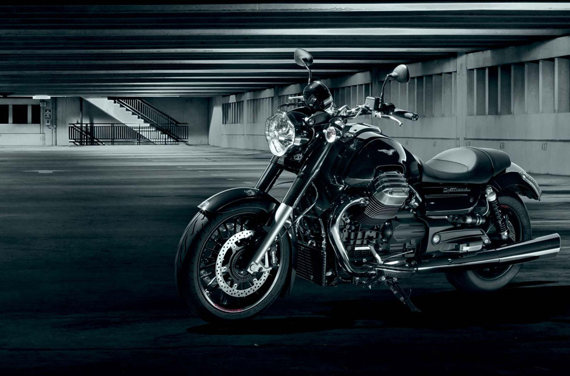

J & P MOTORCYCLES GALLERY
|  |
A cruiser is a motorcycle in the style of
American machines from the 1930s to the early 1960s
, including those made by Harley-Davidson, Indian,
Excelsior and Henderson. The riding position usually
places the feet forward and the hands up, with the
spine erect or leaning back slightly. Typical
cruiser engines emphasize easy rideability and
shifting, with plenty of low-end torque but not
necessarily large amounts of horsepower,
traditionally V-twins but inline engines have
become more common. Cruisers with greater
performance than usual, including more horsepower
, stronger brakes and better suspension,
are often called power cruisers.
CRUIZER
|
|
Standards, also called naked bikes or roadsters, are
versatile, general-purpose street motorcycles. They are
recognized primarily by their upright riding position,
partway between the reclining rider posture of the
cruisers and the forward leaning sport bikes.
Footpegs are below the rider and handlebars are
high enough to not force the rider to reach far
forward, placing the shoulders above the hips in
a natural position. Because of their flexibility,
lower costs and their engines of moderate output,
standards are particularly suited to motorcycle beginners.
Standards usually do not come with fairings or windscreens,
or if they have them, they are relatively small.
NAKED
|
|
Sport bikes emphasize top speed, acceleration, braking, handling and grip on
paved roads, typically at the expense of comfort and fuel
economy in comparison to less specialized motorcycles.
Because of this, there are certain design elements that
most motorcycles of this type will share. Sport bikes
have comparatively high performance engines resting
inside a lightweight frame. Inline-four engines dominate
the sport bike category, with V-twins having a significant
presence, and nearly every other engine configuration
appearing in small numbers at one time or another.The
combination of these elements helps maintain structural
integrity and chassis rigidity.[1] Braking systems combine
higher performance brake pads and multi-piston calipers
that clamp onto oversized vented rotors.
SPORT
|

|
|
Looking for a cheap priced used cruiser motorcycle?
We have them for sale and ready for you to ride.
Hit the city streets or take a long cruise along the
highways to explore
this year and do it inexpensively on on of our cheap
priced late model certified used cruiser motorcycles.
Whether you will be doing some shorter rides around
town or hitting the highway on a long ride to take in
some sights and exploring adventures, a cruiser may just
be the perfect motorcycle for you and we offer a huge
selection of cheap priced used cruisers for you to
choose from. From smaller cruisers to full sized,
completely decked out motorcycles, we have a cruiser
that you will enjoy riding this year. Here, we are
featuring just a few of our many low priced used
cruisers to give you an idea of some of the various
cruisers we offer. We carry used cruisers from every
manufacturer and all of our cruisers are late model
and certified, not to mention cheap priced so you can
ride at a low cost.
|
|
|
|
For those who don't want their motorcycles to look like
over-styled plastic toys and don't care about a little
extra wind resistance, the simple naked models should be
high on the list of available options. In addition to the
unique look, there are plenty of nakeds that offer good
middle ground for those who don't fully want to commit
to sport- or touring-specific bikes. Take a look at
these five bikes you should be able to find for less than $5,000.
|
|
|
|
Power. Speed. Handling. Dominance. Sometimes, bikes just
come with all the elements that make for
a perfect sports bike. In a nutshell, that's
what you get with the Kawasaki Ninja ZX-6R .
It's got the kind of potent strength that will
satisfy even the most discriminating enthusiasts.
For the 2012 model of the ZX-6R, you can expect
the same tradition of middleweight performance that
harkens back to the day of the ZX600-A1.
|